Ashiya, Hyogo: things to do, food and stays
Ashiya · Hyogo
Ashiya
Highlighted on the Hyogo map.
Stay
ホテル竹園芦屋
Hotel Takezono Ashiya
Hotel in Ohara, Ashiya; 1-minute walk from Jrashiya Station.
Dining
串かつ あーぼん
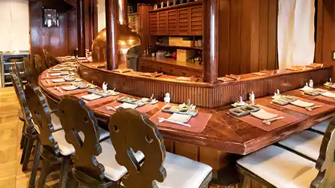
Kushi Katsu Abon
イタリア料理 今井
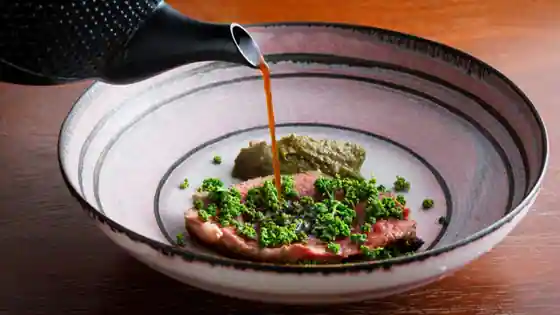
Itaria Ryori Imai
永来権
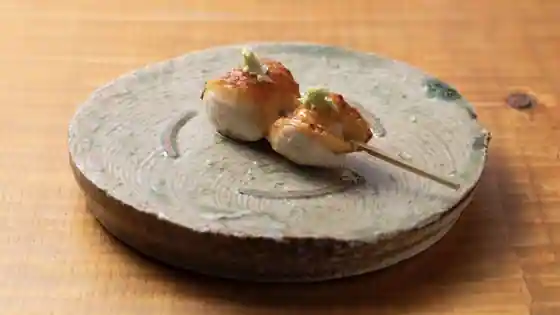
Ei Rai Ken
天ぷら 桜人
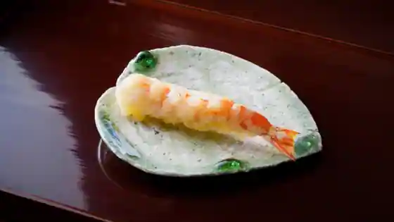
Tenpura Sakurabito
壱
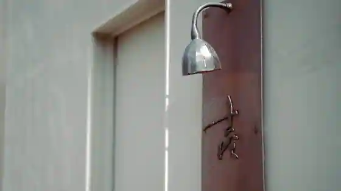
Ichi
ラッフィナート
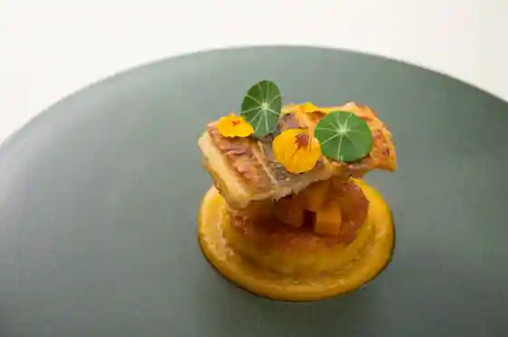
Raffinato
ベッカライ ビオブロート
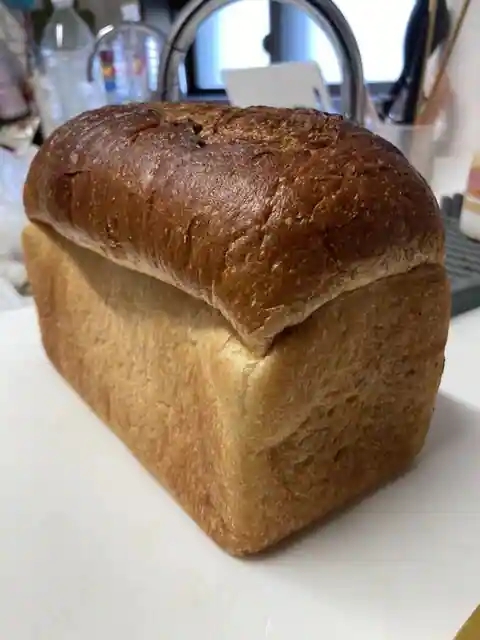
Bekkarai Bioburoto
Poche du Reve
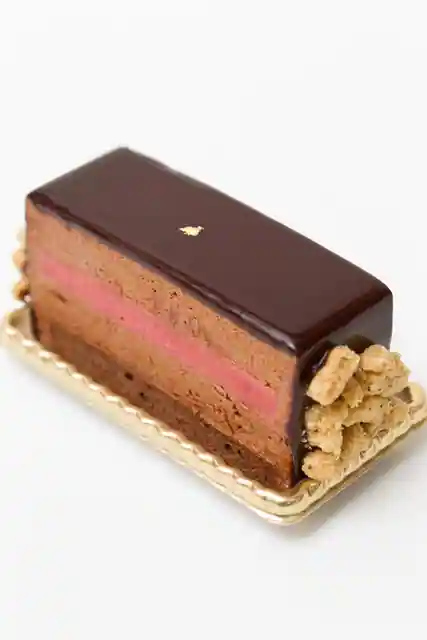
Poche du Reve
パティスリー プラン
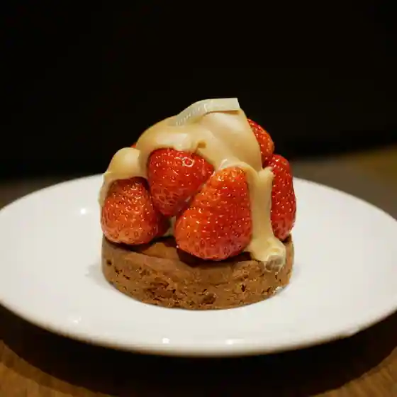
Pateisuri Puran
喜一
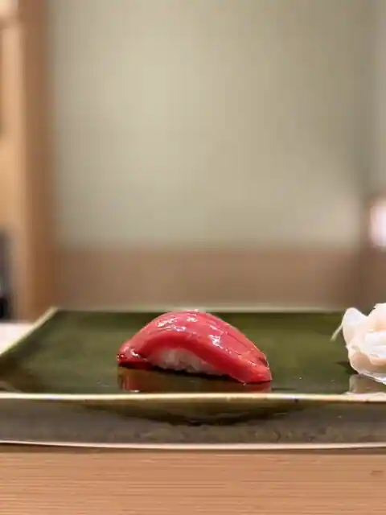
Kichi
メツゲライクスダ 芦屋店
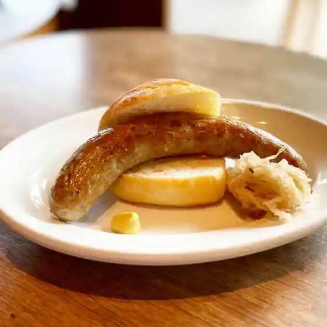
Metsugeraikusuda Ashiya
清水研羊
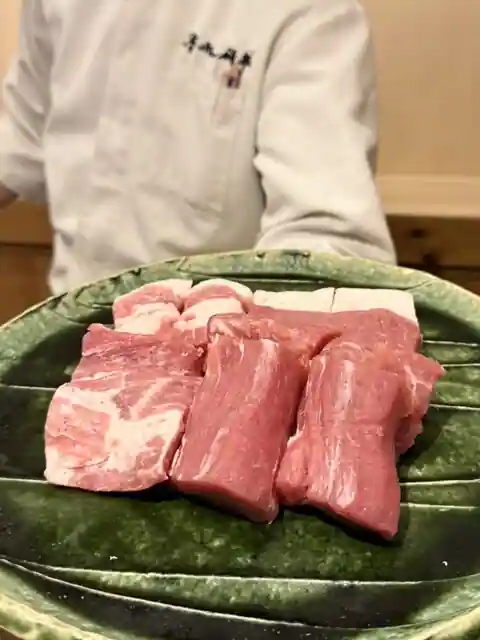
Shimizu Ken Hitsuji
食堂 きふね
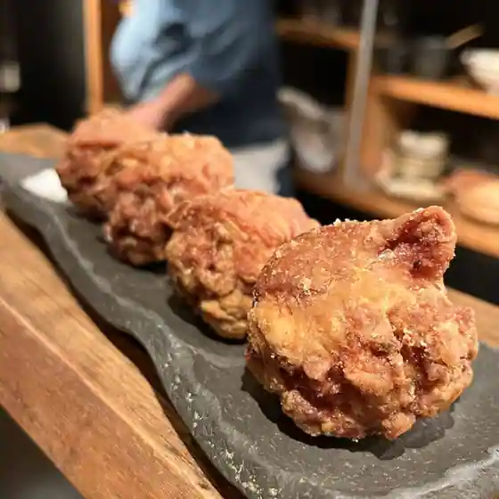
Shokudo Kifune
土山人 芦屋店
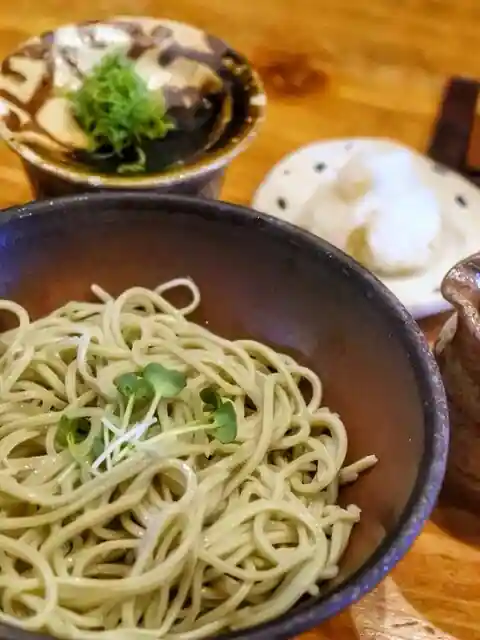
Tsuchiyama Nin Ashiya
水炊き こはく
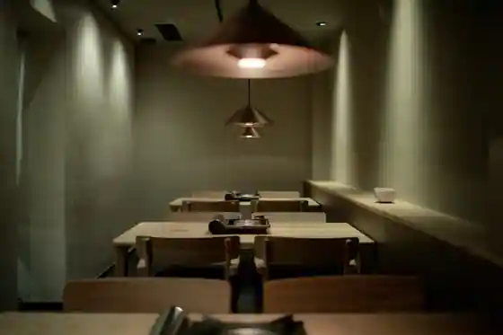
Mizutaki Ki Kohaku
料理屋 仁
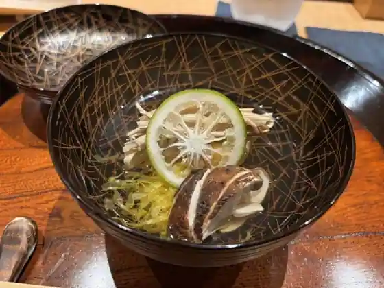
Ryoriya Hitoshi
芦屋けんしろう
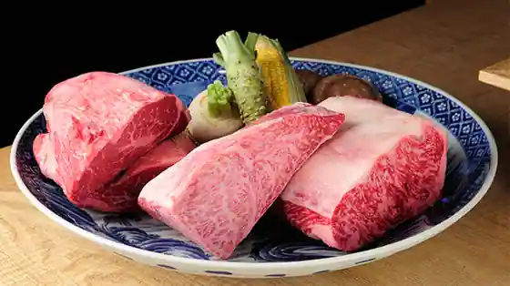
Ashiya Kenshiro
バーンタイ ASHIYA
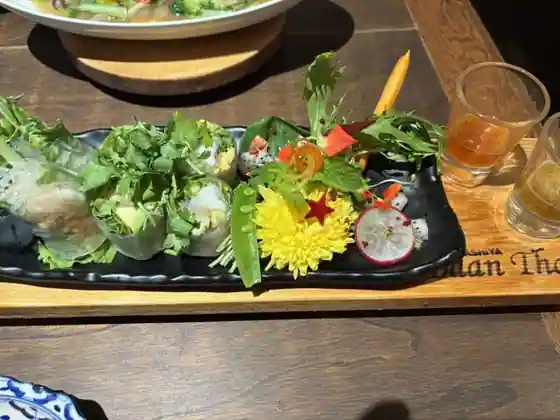
Bantai ASHIYA
眺遊楼 芦屋 ベイコート倶楽部ホテル&スパリゾート
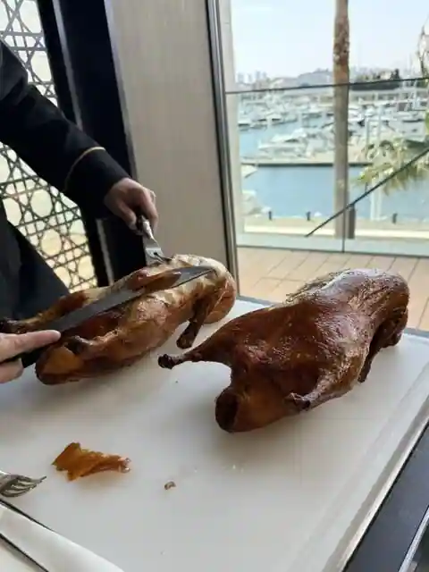
Cho Yu Ro Ashiya Beikoto Kurabu Hotel & Supa Resort
あめ婦
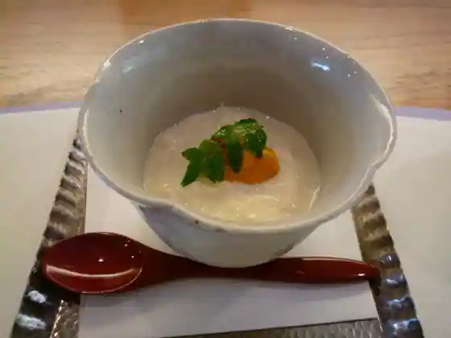
Ame Fu
パンタイム
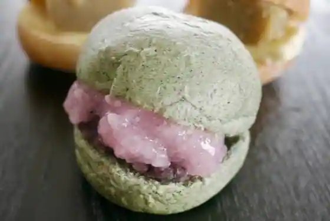
Bakery Taimu
アレグロ 芦屋店
Areguro Ashiya
wada
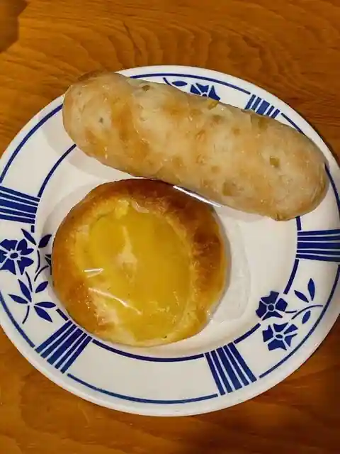
wada
Gui's Burger by Humans of Wagyu
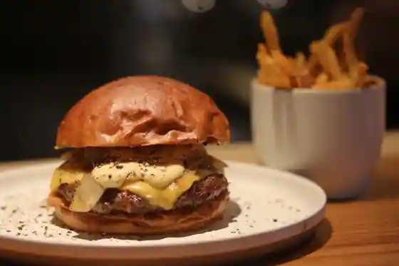
Gui's Burger by Humans of Wagyu